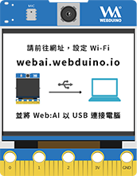

操作模式
當 Web:AI 做完 Wi-Fi 設定及韌體更新後，就可以開始執行各種 AIoT 應用了。
而使用 Web:AI 開發板時，有一些操作方式需要先了解，清楚之後可以盡情使用 Web:AI 了！
關於 Wi-Fi 設定及韌體更新，歡迎參考：初始化設定 ( 第一次使用請看這裡 )。
開機
首先需要將 Web:AI 開發板接上電源，只要接上電源就會自動開機。
一開機會顯示 Webduino Logo
接著進入倒數畫面，這時可以選擇要進入 主程式模式 或是 QRcode 模式。
關機
拔掉電源後會自動斷電關機，最後執行過的程式也會被儲存在開發板中。
再次重新插上電源後，可以馬上執行上次部署的程式。
直接移除電源並不會導致開發板損壞，請安心使用！
重新開機
當撰寫了有問題的程式、網路訊號不穩導致開發板出現意外的狀況，或是想要重新執行程式時，就需要使用重新開機。
重新開機方式：
使用下列 2 種方式，都能夠讓開發板馬上重新啟動。
按下開發板背面的 Reset 按鈕
移除電源再重新插上
反覆重新開機並不會導致開發板損壞，請安心使用！
主程式模式
開機後會進入倒數的畫面，在這時候做出以下其中一種動作，就會進入主程式模式。
在倒數畫面不做任何動作，等待倒數結束
在倒數畫面按下 " L 按鈕 "
進入主程式後，就會直接執行上次部署過的程式。
QRcode 模式
在使用安裝版設定 Wi-Fi 或使用教學範例小卡時，就需要用到 QRcode 模式。
步驟
開機後會進入倒數的畫面，這時候 按下 " R 按鈕 "，就會進入 QRcode 模式，即可開始掃描 QRcode。
回復預設狀態
回復預設狀態功能可以將 Web:AI 的部署程式和 Wi-Fi 設定回復到原廠狀態。
用途
當程式寫錯或遇到異常錯誤時 ( 如：使用大量錯誤迴圈積木 )，容易造成執行程式卡死，這時就需要使用回復預設狀態功能來讓開發板回到預設狀態，再重新執行程式或設定 Wi-Fi。
預設狀態
Wi-Fi 狀態：無連線
LCD 螢幕：顯示「請前往網址，設定 Wi-Fi」，畫面如下：

步驟
- " 按住 " Web:AI 開發板 L 按鈕。
- 按下 Reset 按鈕。
- 當螢幕出現紅色全屏畫面，放開 L 按鈕
- 開發板重新開機，完成回復預設狀態
回復預設狀態之後的設定，歡迎參考：初始化設定 ( 第一次使用請看這裡 )。